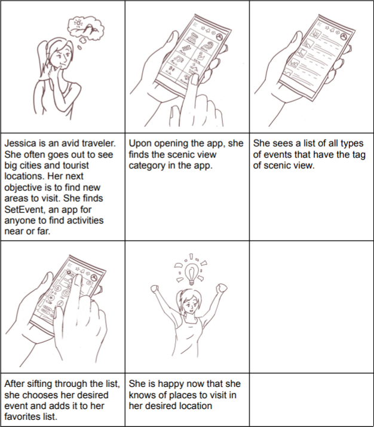
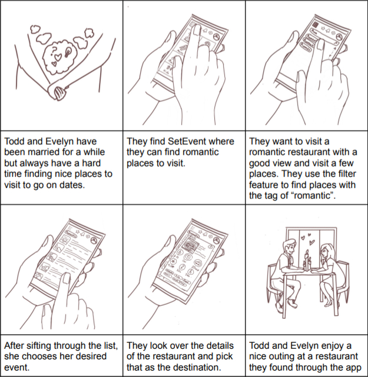
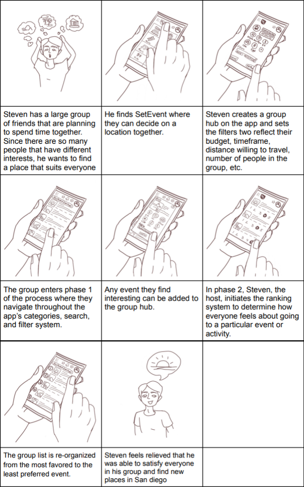

Onwards
For when your group can't make a decision
Overview
"Onwards" was an app idea created for a summer-quarter-long project in COGS 187A. The assignment's theme was travel and the final deliverable was a prototype that was to be created in groups of 6.
Problem
Whether it be in groups of friends, family, or a significant other, it's often difficult to agree upon
an activity or place to eat. Usually, we follow whatever the most vocal individuals decide on or just settle for
Google's top decision.
Though this can work out fine, we wanted to create an app that would take everybody's
preferences into consideration and find the optimal activity or place to eat for each group.
Roles
- Designer
- UI/UX Researcher
Timeline
August 2, 2021 - September 4, 2021
Our blog
Team Creation
The quarter was still completely online so I had to get to know everybody through their lifeless Zoom profile pictures. After our brief and awkward introductions, our first order of business in our five-week endeavor was deciding on a team name. Initially, I didn't think too much of it. But after an hour of throwing names at each other, it became a valuable opportunity to learn about my group mates' personalities and sense of humor. We ended up settling on "Keyboard Kowboys"
Logo ideation
Our first weekly meeting was spent creating our team's logo. We were all tasked with creating three sketches which we would subsequently present to our groupmates
for feedback.
My logos from left to right (or top to bottom)
- I wanted this logo to have a friendly feel so I modeled a macintosh like BMO from "Adventure Time"
- I used an old macintosh and put our group's initials on the screen. My thought process was first identifying items related to a keyboard (computer) and then used a retro version of it because retro items are popular right now.
- In this case, I tried to make a logo which resembled that of a sports team. Followingly, I used a cowboy as our mascot and tried to make some symmetrical design with our initials.

☝ My initial sketches
Logo Finalization
My final sketch

I chose to finalize my third logo because my groupmates' feedback indicated it had the most potential. I firstly incorporated the initials into the cowboy's face because my groupmates suggested the initial design looked too separated. Then I polished the look on the cowboy and finalized the shading.
Team's final logo
The team eventually decided on this logo which was made by Ivan Luu. I too enjoyed the cutesy nature of the logo and I thought the use of the key, cowboy hat, and bandana were good visualizations for our team name: Keyboard Kowboys.
Coming up with our App
Our next few meetings were spent brainstorming what our app should accomplish. To kickoff the process, I suggested we list different pain points associated with travelling. The one that resonated most with the team was the painstaking process of deciding on what to do when travelling in a group.
☝ Some of the apps similar to ours
Identifying the MVP
From here, we moved onto identifying the core features of our app. So similar to our sessions brainstorming the purpose of the app, we began by listing every feature we thought a group-making-travel app should have. After group voting and discussion, we decided our MVP should have these features:
- A friend list and group list (each trip will be organized by "group")
- Group creation
- A chat room and voting room in each group
- A voting system where each group member leaves some sort of rating on each activity in a group's prospective activity list.
- Ability to search for activities and places to eat and then add into a group's voting list
- Ability to leave ratings and reviews on activities and places to eat
Competitor Analysis
A groupmate and I were in charge of the competitor analysis. We figured that Onwards would be most successful if it required less on-boarding in comparison to similar apps such as planmesh and eezy. And focused more on facilitating accessible group discussion in comparison to Tripadvisor, Google, or Trello.
Storyboards and Personas
Every group member was reponsible for creating three personas and a corresponding story board. My personas were of people in a couple, a group of friends, and simply alone. During one of our weekly meetings, we presented and personas and gave feedback on each other's work. After identifying the best artists and nailing down how we thought our app should be used, we created these three personas and storyboards.
Jessica-Individual

Todd-Couple
Steven-group

Learning
Overall, I think it was beneficial to focus on the nature/size of the group using our app in our storyboards.
Keeping the nature of different group dynamics at the forefront of our user-based development ended up shaping
much of our UI/UX choices during the mockup and prototyping phase.
The actual drawings in the storyboards however could've had more facial expressions and development of the use cases.
Just by looking at the art, there are too many frames with just the app and the lack of guiding signs (such as arrows)
makes the storyboard visually confusing. I think we were too eager to start developing the app and turned the storyboard
more of a UI brainstorm rather than a use case brainstorm.
Mockup
The four main tabs of the app were home, search, friends, and profile. The top row of photos was what we imagined would be the flow for a user getting on the app and creating a group for their next trip. The bottom row of photos was the imagined user flow for searching for an event, adding into a group, and then voting on it in the group. I was personally in charge of the search screen, of which I modeled after "AllTrails" and "Yelp"
☝ Main flow
☝ Searching and Voting
Learning
Creating the mockup was a messy process because we failed to elaborate past our initial brainstorm of our MVP and just
haphazardly jumped onto Figma together. Everybody had their own idea of what the app should look like and contain which made
our first drafts extremely incoherent.
After hours of essentially going nowhere, I suggested we take a step back and identify the specific pages the app should have.
From there, we chose an icon package to keep our icons consistent and tackled each page as a group to ensure that
everything was coherent.
In the future, I would definitely run a group meeting identifying the specific pages we need to mockup before actually creating it.
Furthermore, I think it would help the cohesiveness of the mockup to either tackle each page as a group or create some
rudimentary style guide to keep everything consistent.
Final Prototype
Below are three of the main user flows (group creation, searching / adding activities, and voting) demoed on our figma app.
👈 Group Creation
Since groups are integral to the app, group creation and addition were clearly indicated on the home screen. Users can add a title, photo, location, and attendees to a group which will have its own chatroom and voting area for chosen activities.
👈 Search and Add
Each attendee can search for prospective activities using our tag-based filters and sorting features. Each activity has its own page with ratings and reviews that are left by our user base and basic info (like location and what it is).
👈 Voting
Each activity that each group member adds to their group will be available to be voted on in the group's 'activities' tab. Each activity can get a desirability rating of 1-5 and the activities will be sorted from highest rated to lowest rated. Users can also view what other group members rated each activity in the comprehensive vote tab.
Conclusions
Altogether, I was happy with the work my group was able to accomplish in a five week summer quarter that was conducted completely
online.
If we had more time, I would've done a lot more user testing. The little user testing that we were able to do was
organized by the professor and was limited to the other groups within our class. Despite this, we gained valuable information
into how our app should look and function and the feedback largely carried the design changes we made from the mockup to the
final prototype.
As for myself, the biggest takeaway from this experience was to not underestimate the importance of getting to know your teammates.
In previous projects, my relationships with teammates was limited to whatever we talked about for work and in meetings. During my time on
Onwards, I got to know my teammates and relate to them on things outside of the app. I felt that this made us more honest with each other
during feedback sessions and made the meetings much more enjoyable to be a part of.